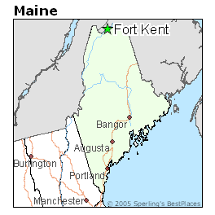
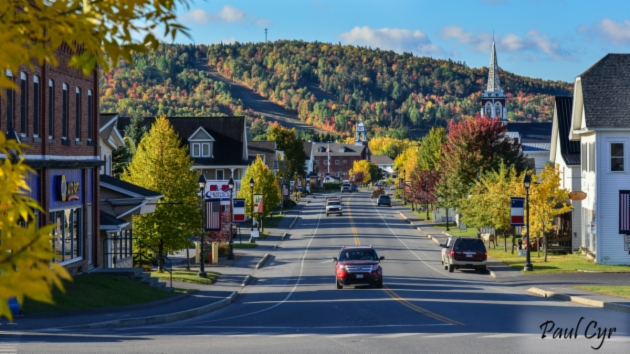
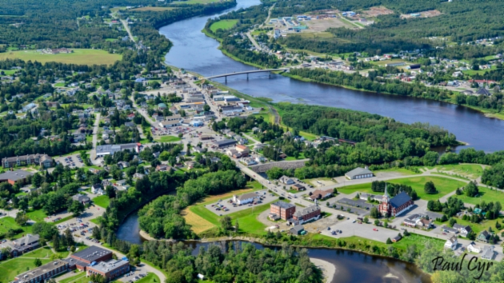

Fort Kent Maine is a small town situated at the northernmost point of Maine.
Fort Kent is part of a region called the St. John Valley. In this area there is a rich Acadian French culture. In fact, my parents, and most other adults can fluently speak french. We identify deeply with our French roots and are very proud of our unique culture. In the image below you can see Acadian flags hanging on the streetpoles in our town.
Residents of the St. John valley also connect deeply with French speaking New Brunswick, which you can see is directly across the International Bridge in our town, as well as the province of Quebec. In fact, it is about 45 minutes closer to Quebec City than it is to Bangor, ME from Fort Kent.
